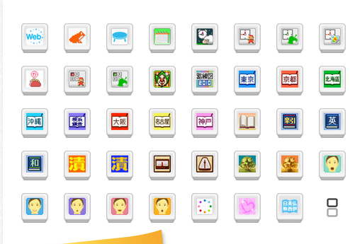
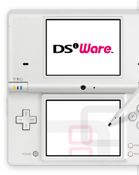

ニンテンドーDSiとニンテンドーDSi LLでは、「ニンテンドーDSiショップ」からインターネット経由で「ニンテンドーDSiウェア」というソフトをダウンロードして、DSiやDSi LLの中に保存できるようになっています。
現在、DSiウェアのラインナップは約200本にもおよんでいます。その中には、ゲームはもちろんですが、普段の生活をより便利にしてくれたり、楽しくしてくれたりするツールも含まれています。
今回のN.O.Mでは、そんなDSiウェアのお役立ちツールをご紹介します。たくさんあるツールの中からお気に入りを見つけて、いつも持ち歩くDSiを自分なりにカスタマイズしてみてはいかがでしょうか。